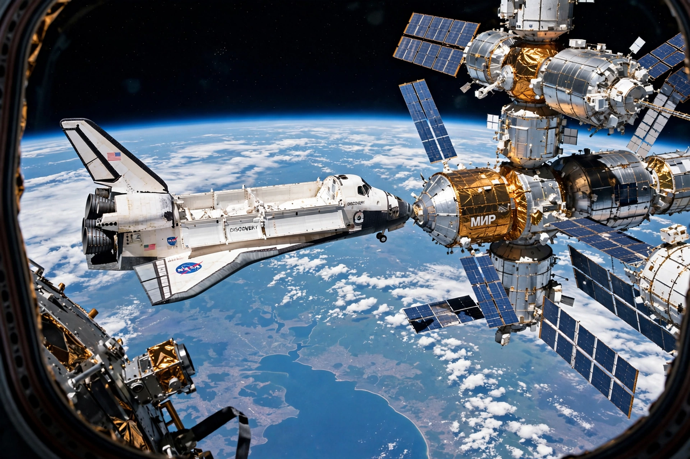

Shuttle–Mir program
From Wikipedia, the free encyclopedia
| Shuttle–Mir program | |
|---|---|
| Participants | NASA (US) / Russian Space Agency |
| Period | 1993–1998 |
| Shuttle dockings | 9 (1995–1998) |
| Outcome | Precursor to ISS partnership |

Atlantis docked to Mir, 1995.The Shuttle–Mir program was a collaborative space programme between Russia and the United States, carried out between 1993 and 1998 as "Phase One" of the International Space Station programme. American Space Shuttles flew to the Russian Mir station, seven US astronauts lived aboard Mir for long-duration missions, and Russian cosmonauts flew on the Shuttle — the first sustained partnership between the former Space Race rivals.
The programme began with Sergei Krikalev flying on Shuttle mission STS-60 (1994) and Norman Thagard's launch to Mir aboard a Soyuz in March 1995, making him the first American to fly on a Russian vehicle. The first docking, STS-71 in June 1995, briefly formed the largest spacecraft complex yet flown.
Fire and collision
The American stays aboard the ageing Mir were eventful: in February 1997 an oxygen-generator fire filled the station with smoke, and that June an uncrewed Progress freighter collided with the Spektr module during a manual docking test, puncturing it and forcing its isolation. Astronaut Michael Foale helped stabilise the station after the collision; Jerry Linenger's tenure included the fire. The incidents raised US congressional doubts about the programme's safety, but it continued through Andy Thomas's stay in 1998.
Despite the drama, Shuttle–Mir gave NASA its first long-duration experience since Skylab, taught both sides joint operations, and built the working relationships — good and bad — that shaped the ISS partnership.
See also
Mir · International Space Station · Space Shuttle · Progress (spacecraft) · Apollo–Soyuz Test Project